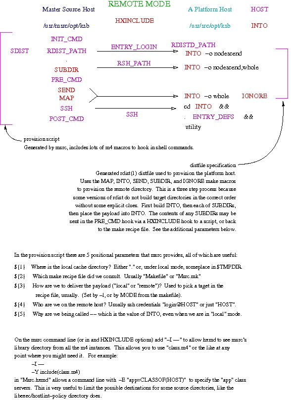

make(1), m4(1),
and the shell sh(1). In addition you
should have a working understanding of
xapply,
and some understanding of how
hxmd
is used to customize files via m4.
Make, briefly described,
runs the fewest commands possible to achieve a goal.
Goals are described in terms of dependency relations between target files,
and the commands make should run to update each of those targets.
Prerequisite targets are always checked (and possibly updated) before their
dependent files. Any file with an updated dependency must be updated if
another target (or the goal) depends on that file.
A make recipe file defines a list of of
possible target files, their dependency relationship to other files,
and the shell commands which would be run to update the target
given dependent files with time-stamps dated after the modification time of
the target. It also defines macros (also known as variables)
which are used to compress repeated lists of files (or commands).
M4 is the UNIX™ macro processor.
It replaces text in files. It is used my many applications as a generic
macro filter, for example sendmail,
syslogd, and autoconfig.
Sh is the default shell. A fairly complete
command interpreter and data-flow language which is used by
make, and ssh.
Xapply derives shell commands from a template
and a list of items, then runs the commands in parallel to maximize
throughput.
Hxmd uses xapply and
some related commands to apply a command to many hosts in parallel.
And msrc uses hxmd to
send files and commands to many remote hosts.
Msrc updates a remote host with a
copy of a local directory via rdist, then executes
a shell command on the remote host in the context of the
updated folder.
In short msrc executes an arbitrary
distributed task across a set of hosts with a known set of files.
The primary use is to build, install, and
configure software on a large group of hosts.
To do that msrc's default command is
make, and a make
recipe file is also used to configure the program. So anyone
using msrc must have a good understanding
of make.
Here is the command-line usage for msrc:
msrc [-lz] [-preload] [-fmakefile] [-mprereq] [-Pjobs] [-ulogin] [-yyoke] [hxmd-opts] [utility]
msrc-h
msrc-V
Msrc is a wrapper for the shell command that is to be
executed on a set of remote hosts.
In this case the wrapper encloses a utility
and creates an environment that looks like the local directory on
each target host.
Msrc updates the
target via hosts rdist(1),
the executes the requested command via ssh(1).
In other modes of operation one might use rsync
rather in place of rdist.
Since it leverages hxmd's configuration management
data it is especially useful for distributed tasks across heterogeneous hosts.
It supports variation in the target population by
using hxmd's m4 file
processing to customize scripts, makefiles, or data-files
from the current directory, as it copies them to each target host.
As an example, to build a program on 900 hosts in my environment I might use:
msrc -Cdmz.cf make all install clean
To reduce command-line complexity, msrc quotes the
target utility (in this case
make) and its parameters to
protect them from the m4 processing done by
hxmd and the shell parameter expansion done by
ssh.
It also constructs the required rdist
distfile on the fly,
so the operator doesn't have to triple quote parts of
the command.
This is an evolution of the work
I did at the Purdue University
computing center. The older tools required more explicit
configuration of rdist's distfile, and
a much longer makefile. The new structure is a little
harder to boot-strap, but is much faster, easier to configure,
and more flexible.
While intended primarily to drive make on
the target host, msrc may execute any shell program.
That shell program may take a different action for
any subset of hosts, because msrc uses
hxmd's
configuration management to customize the set of source files
distributed to each host.
Almost any hxmd option may be presented on the
command-line, which is represented as hxmd-opts
in the usage above.
This flexible tool is quite convenient for many recurring systems administration tasks.
msrc and the
rest of msrc_base already installed.
msrc works we break the user interface
into several steps. Each steps uses data from the command-line,
environment variable, or
a file in the current directory to provision the next layer.
This is a quick link index into the main sections:
Msrc accepts options for
xapply and hxmd,
which includes options for ptbw and
xclate. The few options it parses for
itself are documented below.
makefile
makefile
represent the disposition of the files from the current working
directory.
hxmd
Msrc creates template files that
hxmd expands to update each target host.
rdist
Rdist sends a copy of the current directory to
each target host.
utility
utility
specified on the command-line on the target host.
There is also an alternate local data-flow which allows a completely local version of the process. This provides service for hosts that are not able to receive incoming network connections.
There are some details to illuminate how to manage recursive subdirectories which should help explain the tactics used in that case.
Msrc is built on top of hxmd, it accepts
most of the options hxmd processes and hands them
off to hxmd (which in turn hands lots of them down
to xapply, ptbw and xclate).
There is one option that msrc won't pass down:
the -F option changes hxmd's
parameters from literal strings to filenames, since msrc
provides those all as files it can't allow any command-line specification.
In addition to the hxmd options msrc
processes the make option -f to
change the default name of the makefile used in the
next step.
Msrc looks for a file named either
"Msrc.mk" or "msrc.mk" before falling back to
make's defaults of "Makefile" or "makefile".
Like make, msrc looks in the
current working directory for these files.
The standard -h and
-V options output the usage and
version information, as in all of my tools.
The other options make more sense in context, briefly:
-l triggers local mode
-m changes the
synthetic make target
-u provides a shorthand to define a default ENTRY_LOGIN
-y provides options to make to suggest macro values, or options
-z ignores the make macro HXINCLUDE
-l changes the mode to local
makefile as a configuration fileMsrc extracts the values of
several make macros from
the makefile found under -l.
Make meets our needs and
doesn't really limit us, since we are bound to
the current working directory for the other files we process.
We also gain a standard file format we don't have to parse, since
make recipe files are common to all UNIX (POSIX)
platforms.
As a bonus we can use make's dependencies to
trigger prerequisite tasks.
A common use to this feature it to check-out files
from a configuration management facility, if they are missing or
out-of-date.
The command-line option -m allows us to
change the prereq target we use in this step.
The default value for prereq is
"__msrc" (which is two underscores prefixed on
the name of the program).
msrc extracts of makefile macrosmake macro from a shell command-line
let us add a synthetic target to the end of makefile
that echo's the value.
For example
cat Makefile - <<\! | make -f - __msrc __msrc: @echo ${INTO} !
This fragment outputs the value of INTO
to stdout. Msrc uses
some slightly more advanced chicanery
(with added file descriptor manipulation)
to extract the seven make macro values it needs.
make macros msrc extractsmake macros listed
below contains only filenames or fixed strings
(which both make and m4 can process)
we assert that none of them can contain embedded white-space.
When you need a filename with embedded white-space you
might stop to ask yourself, "Why?"
As given in the example code, the first macro is INTO.
This macro specifies where (on the target host) the cached
copy of the current directory is to be constructed.
The empty string triggers a default value which
replaces the string "/msrc/" with
the string "/src/" in the path to the current working directory.
Always specify INTO when your application
requires a specific target directory.
The default is good for the design use of msrc.
The INTO macro may not
specify more than one target directory,
or the current working directory.
This prevents the disaster of sending customized files over
the top of the source files.
If you try to target the current working directory you'll see an
error like:
msrc: /tmp/ksb/msrc: will not target the current working directory
An example of this macro from a real makefile:
INTO=/usr/src/home/monitor
The macro MODE selects the default
mode of operation for msrc, either "local" or
"remote". We talk about this more under local mode below.
By default the other macros segregate the files in the current
directory into 5 non-overlapping groups,
which msrc uses to
decide how to process each file.
When the specific macro for a group is not set, or set to an empty list,
msrc creates a value for that macro from the
files not otherwise consumed.
In other words each file is normally used in only a single macro.
SUBDIR
MAP
hxmd's
m4 structure; the customized file is sent
to the target host with any ".host" suffix removed.
The most common mapped file I include is "Makefile.host".
This allows some recipe targets to hold custom commands for each
target host and operating system combination.
Before the master source structure used msrc
it used distrib and the platform recipe file
was commonly named "Make.host", which is how
one can tell that a directory needs an upgrade to the 2008 version.
For more about the old code and tactics see
the HTML document.
HXINCLUDE
hxmd.
The common name for this file is "Msrc.hxmd",
which matches the default suffix so it doesn't need to be specified
in the Makefile.
SEND
makefile when there are files you need to force
into the macro below.
IGNORE
except's in any generated
distfile.
Any files listed in this macro force all the other files
into the SEND
macro as they are mutually exclusive.
msrc does any processing.
As a side-effect of running msrc
some prerequisite updates may be checked by make
in the local directory.
Since the default prereq target is predictable, based on
the program name, it is possible to
add a make dependency to that target.
For example the fragment assures that the files
listed in SOURCE exists, or are
checked-out before the update process begins:
SOURCE= a.c b.c main.c common.h ${SOURCE}: co -u $@ __msrc: ${SOURCE}
Any prerequisite bound the the target may be checked
(more than once, in some cases) before
the utility runs.
If the update recipe has side-effects it would be best to
protect it with some other logic.
An alternate set of prerequisite actions might be specified
with the -m command-line option, or
a link to the msrc program with a difference name.
This flexibility allows a single makefile
to support multiple uses. Later we will describe the other
form for -m which allows
for a cleanup target as well.
Take care never to define the synthetic target
in your makefile.
Putting a recipe on that target suppresses the recipe
msrc adds, so
msrc appears to extract empty values for
every make macro.
Error messages like:
stem from a missing (or nonsense)msrc: cannot deduce "INTO" not under "msrc":pwd
INTO value.
make macros to a list of files is
the intended interface. Two alternate forms come to mind
when you know how msrc extracts their values.
SEND= *.plain *.peanut
msrc emits to gather the values
uses a shell echo statement with a redirection
on the end the shell will expand the globbing asterisk in SEND.
HXINCLUDE= ; some-command with arguments
echo the output of some-command
will be assigned to HXINCLUDE, from msrc's
point of view.
To be clear, this does limit the usefulness of the macro
for any other purpose inside makefile. With more
complex pipelines one might have to apply parentheses.
In either case the use of these tactics indicates you've
made a spell few people will grok without help. Comments
in the makefile help a lot.
hxmdmsrc builds the
hxmd wrapper to process each host.
The instance of hxmd does all the
heavy lifting: it manages the loop logic, selects
the hosts to target, customizes the
files listed in MAP, executes
rdist to update target directories,
then runs the given utility on
each selected host.
The directory might need to tune hxmd; to do this
msrc uses the
make
macro HXINCLUDE to specify extra options to
hxmd.
Each of files listed contains options for hxmd.
The options are passed on to hxmd
via the HXMD_PASS environment variable, as
described below.
All files listed in
the make macro MAP
are customized via hxmd's m4 macro expansion.
Each resulting stream is placed in a file with the
original name, sans the ".host" extension.
All of the customization performed by hxmd is
specified via the attribute macros it provides. To take full
advantage of msrc some policy attributes
may have to be added to your site.cf file.
msrc expectsmake is distinct
from the m4 macros provided by hxmd's
configuration files.
These macros are all rendered in
this document as ENTRY_LOGIN.
In the previous sections we talk about
make macros: below this point we talk
mostly about attribute macros.
The makefile specifies make macros, while
the hxmd command-line options
(-D, -C, -X,
and -Z) garner attribute macros for
hxmd's m4 macro processing.
In the following steps we are going to use these attribute macros to
customize the m4 processed files hxmd produces for
each target host.
Here is a summary of the attribute macro msrc uses:
HOST
key value
(set by hxmd's -k option)
ENTRY_LOGIN
HOST when it is used to
specify a network destination.
-u is a shorthand
for definition of this attribute.
msrc won't specify a remote login name.
ssh might map the login with
the option User, which might be set per-host in
a local ssh_config file.
ENTRY_DEFS
. command) into
the remote environment before execution of utility.
INCLUDE_CMD(mode)
-j, or in
some HXINCLUDE file
(viz. Msrc.hxmd).
INIT_CMD
PRE_CMD
utility on each target.
POST_CMD
RDISTD_PATH
rdistd on the remote machine, if we need to
set it with rdist's -p option.
RDIST_PATH
RSH_PATH
rdist's -P option.
SSH, when not defined.
SDIST
rdist followed by both the -p and -P options and a trailing -f. The could be used to
call a program other than rdist for some hosts.
msrc constructs a value from
RDIST_PATH, RSH_PATH
and RDISD_PATH
SSH
MSRC_MODE
MODE
make macro, or set to "local" under -l, or
set by default to "remote".
It is forced (under -D) in
the hxmd command-line.
msrc extracted from the makefile
it constructs two files.
The first is a distfile for rdist that
would update a remote directory (extracted from INTO)
from the current directory. The second is a shell script that is
customized by hxmd for each host
selected. This script uses the distfile to run
rdist, then ssh to run the command
line utility.
After all that is setup msrc builds an hxmd
command-line, then executes that program to do all the work.
The details below explain how that comes together.
distfiledistfile is rendered through m4, so it
is a strange mix of extracted make macros mixed
with ifelse logic based on hxmd attributes
encoded in m4 macros. All this means is that
reading it requires a firm grasp of where all the data came from
and how it is going to be interpreted by rdist.
We are building a distfile with three labels:
INTO)
on the target host.
SUBDIR.
It may seem like calling rdist three times is a bit
much, but some (older versions) of rdist need the support.
Distfile detailsdistfile uses some hxmd
attribute macros to customize the transport.
Compare the example below to one of
these msrc outputs under
the -d S option on your host:
dnl rdist distfile to update a remote host `myself: ( . ) -> ( 'ifdef(`ENTRY_LOGIN',`ENTRY_LOGIN@')HOST` ) install -onodescend /usr/src/local/sbin/msrc;' `dirs: ( . ) -> ( 'ifdef(`ENTRY_LOGIN',`ENTRY_LOGIN@')HOST` ) install -owhole,nodescend /usr/src/local/sbin/msrc;' `files: ( msrc.man msrc.m make.m README TODO machine.h mreg.ksh msrc.html envfro m.m ) -> ( 'ifdef(`ENTRY_LOGIN',`ENTRY_LOGIN@')HOST` ) except_pat ( /RCS /Makefile ); install -owhole /usr/src/local/sbin/msrc;' `( 'HXMD_1` ) -> ( 'ifdef(`ENTRY_LOGIN',`ENTRY_LOGIN@')HOST` ) install -b /usr/src/local/sbin/msrc/Makefile ;'
When hxmd runs that through m4
it produces a distfile that is
custom-fit to send the source to msrc
itself to a target host. Since the source to msrc
doesn't have any subdirectories the "dirs" label won't be used, the
safety feature of putting a safe transaction on that label helps
other programs automate their use of msrc.
The attribute macro HXMD_1 is provided
by hxmd: it is the first file in
the MAP macro (in this case "Makefile.host" is
being sent to "Makefile" on the target machine).
When there are other files in MAP
There are two files on the hxmd command
line that are not mentioned in
the marked-up distfile: The
control file (below) and the last file on the command-line,
which is the file displayed above.
hxmd processes this file
though m4 for attribute expansion,
then runs the output as a shell script.
The script calls rdist at least
twice: once to assure that the remote directory exists,
and once to send the files. Then uses the remote shell
selected to start a shell on the remote machine to execute
the specified utility.
Compare this example to one msrc
outputs under -d S on your host (I did remove
some m4 markup in
this example, after you grok this see below):
dnl remote per-host update script for hxmd `#!/bin/sh '`set . "Makefile" "remote" "'ifdef(`ENTRY_LOGIN',`ENTRY_LOGIN'@)HOST" "/usr/src/local/sbin/msrc" ifdef(`INCLUDE_CMD',`INCLUDE_CMD(`remote') ')dnl ifdef(`SSH',`',`define(SSH,`ssh')')dnl ifdef(`RSH_PATH',`',`define(RSH_PATH,`SSH')')dnl ifdef(`RDIST_PATH',`',`define(RDIST_PATH,`rdist')')dnl ifdef(`SDIST',`',`define(SDIST,`RDIST_PATH `'ifdef(`RSH_PATH',`-P`'RSH_PATH') ifdef(`RDISTD_PATH',`-p`'RDISTD_PATH') -f')')dnl ifdef(`INIT_CMD',`INIT_CMD ')dnl dnl myself, subdirs, then files: SDIST HXMD_1 myself || exit $? dnl SUBDIR is empty SDIST HXMD_1 files ifdef(`PRE_CMD',`PRE_CMD ')dnl SSH ifdef(`ENTRY_LOGIN',`ENTRY_LOGIN@')HOST ifdef(`ENTRY_DEFS',`. defn(`ENTRY_DEFS') \&\& ')`cd /usr/src/local/sbin/msrc \&\& :' ifdef(`POST_CMD',`POST_CMD ')dnl
The reference to HXMD_2 is replaced by
the name of the processed distfile from
the previous section.
As in the example in the last section the source for msrc
msrc
displays the parts explained below as the -d
option requests.
With the debug flag "-d X" msrc
outputs the generated hxmd command-line on stderr.
That also passes the debug flag to hxmd which traces
the execution of the wrapped xapply stack.
hxmdMsrc reads each of the files from the list set by
the makefile macro HXINCLUDE
to set an environment variable for hxmd (called
HXMD_PASS).
The command line option -z skips this step,
allowing an explicit command line to override the makefile.
The command line for msrc contains options to
hxmd to select hosts and tune the use of m4
and xapply's stack. Experience with these tools
has shown that the command line options tend to be long
and mostly the same for any given directory.
In fact the common parts were almost always the
configuration file (-C, -Z,
-X), host selection (-E,
-B, -G),
m4 tuning (-D, -I, -U)
and merge (-o) options.
By drawing those options from a file we avoid having to type them
on the msrc command line every time we run the program.
Another way to do this would be to code a shell script to force
the options into the command line: since we'll use that method
to solve a different issue later we don't want to use it here.
There are three goals met with such a file:
hxmd site configuration may
not include any chasis color information, but this configuration
management problem requires that attribute: force the merge locally.
For example "Msrc.hxmd" might contain:
# $Revision control infomation... # We need to include the color information for movie.com -X color.cf
Nodes that are mentioned in one configuration but not the other create does a close-the-loop problem. Some mechanism to increase the certainty that the files are synchronized before use is strongly advised.
For example "Msrc.hxmd" might contain:
# $Revision control infomation... # We need to know the color of every host -BCOLOR
The use of the -z option defeats this
injunction for legitimate testing or for silly people.
m4 hooks above provide
the opportunity to call other structures, but are too cumbersome to
type on each command-line. By placing the hooks in
an hxmd options file we remove that burden.
See examples of this below when we explain recursion.
An important point: we normally only put options common to
mmsrc (micro-msrc) and hxmd in these files.
Since mmsrc doesn't
emulate xapply's stack we mustn't include
any options it doesn't know in these files.
Another important point: using -z without careful
inspection of the options you are ignoring is about as safe a playing with
a gun you didn't clear yourself.
Never point a loaded msrc at
a structure you are not willing to destroy.
Given that msrc is designed to update directories
completely this is a pretty fair rule in all cases, but much more important
when you use -z to take off someone's safety.
There are other reasons why these options are gathered in this indirect way:
make to
keep them up-to-date with respect to any "up stream" data source.
echo in the synthetic make
target removes a level of shell quotes, so options passed though that system
would have to be (at least) double quoted.
msrc side) only breaks the list on
white-space, so it would have to be taught to parse quotes for options
with embedded spaces.
The files are read as a single catenated text stream. In that stream:
mk in these files.
HXINCLUDE to a value, without actually
reading a file. One might also use "/dev/null" as an explicit
value that has no options in it.
After removing comments, if the only thing in the stream is the
string "--" then the the stream is replaced with an empty one.
The environment variable HXMD_PASS is set to
the resultant stream.
Hxmd reads this variable in preference to
HXMD.
Without intervention the HXMD_PASS variable is
inherited via the environment by any descendent processes,
including nested hxmds.
Hxmd has an option (-z) to
clear the environment variable after it is read for options.
With -z set in any HXINCLUDE
file any descendent use of hxmd reverts to
reading HXMD rather than
HXMD_PASS.
m4 markup (with the crazy
@file@ notation) or sent as-is.
Since the
implementor doesn't code a distfile,
and need not use rdist at all,
msrc
must provide another way to support this feature.
To copy a file from from a different local directory,
in the new structure, list it by either an absolute or
relative path in the SEND macro.
That has a big issue: that whole path is catenated on the target directory.
To defeat that use the rsync-style notation:
version 2.6.7 allows a "/./" in the path to represent where to
start the target directory. Everything before that token is
replaced with the target directory.
To send /home/663/ksb/lib/this.tar to
the target directory itself, as just this.tar,
include the path SEND as:
To include theSEND= /home/663/ksb/lib/./this.tar
lib component word it as:
SEND= /home/663/ksb/./lib/this.tar
Any file copied from a parent directory has the "../" prefixes removed in the target directory. This is done to protect sibling directories on the platform host from accidental updates. To override this protection prefix the path with "././", that activates the previous rule, which always suppresses this one.
See the rsync manual page for another example.
The MAP macro works exactly the same way.
Of course any ".host" suffix is removed as well.
The SUBDIR lacks this feature, as a recursive
call the msrc with a yoke
set for INTO works better.
hxmd-P is greater
than 1 we use ptbw to manage a list of temporary
directories. We stage the processed MAP files in these
directories for rdist's use.
In this case msrc actually execve's
ptbw to wrap hxmd
with a command that looks like:
ptbw -mdt dirlist -N socket hxmd ...
When the parallel factor is 1 there is but a single directory
so we don't have to use ptbw. In that case hxmd
is the direct child of msrc.
By using the -d option to ptbw
we hope that we won't interfere with any use by an
enclosing wrapper. We also do not change any of the
environment variables used by ptbw.
We even preserve ptbw_d by setting it
back to the inherited value, or unsetting it (under -l).
-Z option is presented on the
command msrc passes hxmd the
string "hxmd" to defeat the logic which looks for a
default configuration file.
Any other program name is passed on to hxmd
as its program name, so the default zero configuration file is
msrc.cf.
Since ptwb follows the wrapper rules for program
names it passes the correct name down to hxmd
when it is used for temporary directory management.
hxmd command linehxmd
is built as:
hxmd passed-options -Pparallel-DMSRC_MODE=mode-F0 --updatemapped-filesprovision
That is to say we follow the program name with any options passed
through the command line to hxmd, then an explicit
-P option, an explicit -F0, an option
terminating double-dash, the generated update script, the list of
files from the make macro MAP, then a
helper file (the rdist distfile).
utilityMsrc executes hxmd,
which does all the work. Then it removes some temporary files
and exits with the same exit code hxmd returned.
When no utility is specified
the default utility is "make".
So when we put that all together we get a picture that looks like this:

utilityutiltity command is
another instance of make.
When it is not the default one might use some other standard scripting agent.
Any command that might become interactive defeats the purpose of
the large-scale automation msrc provides.
Using some scripting agent (shell script, make
recipe, or the like) allows for a much more repeatable process. Allowing
that one could wrap any command as the utility,
it would be "poor form" to make the maintainer of your structure type
a hundred character command to use your automation.
There are four options I use to get the right recipe (and recipe file) to the target machine:
makefile
makefile
that are unrelated to its use by msrc as
a configuration engine. These can then be triggered on the target
host.
The has the advantage that only a single recipe file controls both sides,
but that is also a disadvantage in that the same target recipe
(viz. clean may already be in use, and
conflicting uses for a single recipe is hard to document and maintain.
I always include the word "pun" in the comments in such a
recipe file.
MAP
feature) to customize the recipes for each host. The safest way
to process any mapped file is to quote the entire contents from
m4, only unquoting the parts you
want expanded. All the example files I write assume this style.
This is the most common in my environment because I like to
keep the "master" and "platform" recipe files separate.
This also has the advantage that the same target may trigger wholly
different logic on each target node, based on
any attribute hxmd can process, and the
recipe file can derive at run-time.
mk markup in some other file
mk -mInstall *.manMAP) then put that command inside the
recipe file and run it indirect via make
as above.
op(1) to escalate privileges
op rule-base is a valid
indirection to select the a recipe modification. For example an
admin group might build as themselves, but install as the superuser:
which is exactly what op is good for.
I would only use op to execute one of the
methods above.
op make install
This implies an escalation rule that allows certain make
targets to be run as the superuser.
That's much more sane than allowing arbitrary shell access as the superuser.
At the least you'll need install and
clean.
Here is a sample rule to allow this access:
This is most secure when the "make all" is run as the administrator, or we can run other targets as the "source" login with the additional rule (after the one above):make /usr/bin/make $1 $* ; $1=^(clean|install)$ groups=^(source|root|wheel)$ uid=root initgroups=root gid=source
make /usr/bin/make $* ; groups=^(source|root|wheel)$ uid=source initgroups=source
Obviously sending a plain old shell script is better than nothing,
but it shows a slight lack of imagination. It also may have to be run
with an explicit dot-slash to be sure it is selected by
$PATH, while a make
recipe file is always assumed to be directory specific.
Under the command line option
-l msrc
doesn't use rdist to update the
target hosts.
In that mode it builds the desired directory in a temporary
space (under TMPDIR, or "/tmp")
so it can run the given utility
from the staged directory.
This allows another transport mechanism to be used to
project the data to another host, while still
allowing msrc to generate the up-to-date files.
For example the updated directory might be put on external media, or
copied to a local repository, or sent back
to the requesting client via a "pull" request.
The makefile may also request
local mode by setting the make macro
MODE to the value "local".
To explicitly forbid local mode set the macro to "remote".
For example:
MODE=local
The steps taken are the same except for "Control file details". At that point we substitute as below.
distfile and the update scriptrdist
to copy files into our empty temporary directory we build
a marked-up shell script to do the work.
Here is an example:
msrc: cat <<\! >/tmp/mtfcakNZCB/provision dnl complete the ephemeral directory then run command `#!/bin/sh 'ifdef(`INCLUDE_CMD',`INCLUDE_CMD(`local') ')dnl ifdef(`INIT_CMD',`INIT_CMD ')dnl `cp "Msrc.mk" $1/ cp -p 'defn(`HXMD_1')` $1/"data.txt" cd $1 || exit 69 `cd $1 || exit 69 'ifdef(`PRE_CMD',`PRE_CMD ')dnl ifdef(`ENTRY_DEFS',`. defn(`ENTRY_DEFS') && ')$SHELL -c "utility" ifdef(`POST_CMD',`POST_CMD ') `exit'
After m4 expansion this script copies
literal files, then files listed in MAP,
then changes directory to the staged area and runs the given
utility.
Since the update script doesn't have to call rdist
or ssh it is a little shorter.
It does, however, have to manage the temporary directories, and
it uses ptbw to do that.
dnl local per-host update script for hxmd `#!/bin/sh unset ptbw_d exec ptbw -tsome-path-R1 sh -c "mkdir -p -m 0700 \$ptbw_list;'defn(`HXMD_1')` \$ptbw_list < /dev/null;exec rm -rf \$ptbw_list" 'dnl
The code "unset ptbw_d" removes the usage of ptbw
from the process environment of utility.
We are not trying to wrap utility, and
it might be using a
"ptbw -d" instance itself.
In the case where msrc sees an active
ptbw -d diversion
it replaces the unset with a variable
assignment to restore the original value.
So when we put that all together we get a picture that looks like this:
hxmd start-up you
should have a file "site.cf" that has at least a few hosts in it.
With that file we can build an msrc
sample directory to see how it works.
/tmp or
your home directory. I'm going to use "/tmp/ksb" for my
source directory.
Replace the hostname svr7 with a
short hostname from your "site.cf" file.
$ cd /tmp $ mkdir ksb $ cd ksb $ echo "INTO=/tmp/ksb.dest" >Msrc.mk $ msrc -Csite.cf -E SHORTHOST=svr7date
You should see two rdist update
banners, then the output of date from
the target host. Here is the output from my host:
Replace "date" with "uname -a" to be sure the time-stamp came from the correct host.svr7.sac.fedex.com: updating host svr7.sac.fedex.com svr7.sac.fedex.com: updating of svr7.sac.fedex.com finished svr7.sac.fedex.com: updating host svr7.sac.fedex.com svr7.sac.fedex.com: updating of svr7.sac.fedex.com finished Mon Feb 15 16:20:00 CST 2008
INIT_CMD to
set -x.
If that doesn't tell you
enough you can put a dumpdef in
that attribute to display the m4 bindings in scope.
Inside the update script the attribute macro HXMD_0
is the name of the script itself. Use that to copy the script to someplace
safe if you need to preserve it (for example mail it to yourself).
Remember that in situations with large numbers of target hosts
and a high parallel factor a simple cp to
a fixed filename will race, badly.
COLOR, since I don't know what you've
decided to implement. We are going to build a file that changes
content based on that attribute. There are 3 common ways to do that:
`Hello, I am 'COLOR` today.'
ifelse or ifdef to select text
m4's if statements are
limited to exact string matches, so the cases here can be numerous:
HOST `is a' ifdef(`COLOR',`pretty COLOR',`plain') HOSTTYPE`.'
include filename
make macro IGNORE
so it catches "*.m4" (for example) then use:
include(COLOR`.m4')dnl
It is also possible to run shell commands from within
m4, although capturing the output is
a bit cumbersome -- it might be better to leave such work to the
target side when possible, as that distributes the
computation more evenly.
As always, keep plain text inside quotes as long as possible: only drop quotes when expanding an attribute macro or other markup.
make macro SUBDIR
are sent to the same target hosts.
This is possible but is not automatic.
It requires some project and site specific knowledge to know
which data to send down.
hxmd and
msrc to help
with recursive execution.
yoke command-line options
make recipe file should have a valid
default value for each macro.
Some recursive instances of the process might need to re-tune
those defaults to be more aligned with their needs.
Under -y any option may be
passed to make, but usually we limit
ourself to macro assignments. Since these macros help the
parent and child instances of msrc work
in tandem we call the "yokes". (Like oxen pulling as a team.)
The best example of this is the INTO
macro: if the parent doesn't pass this on to each child instance
there is a good chance they will send their source to the wrong
platform directory.
make macro HXINCLUDE
msrc command lines.
Placing those recursive options in a file saves a lot of typing,
and command-line errors.
This is where hxmd's merged
configuration option (-o) is specified.
For example we might need to capture just the transport attributes. We place the merged configuration option in a file ("Msrc.hxmd"):
# capture transport attributes -o "RSH_PATH ENTRY_DEFS ENTRY_LOGIN SSH"
-D
-o) specified for
hxmd.
We take this tactic since any host selection options
(B,
E, or G)
might evaluate differently in the context of the subdirerectory.
The merge option requires a list of the attributes to record:
the application's needs dictate which ones to include.
The resulting file is available in the attribute macro
HXMD_U_MERGED.
See host we pass this file back to make below.
-C
-X
-Z
HXMD_OPT_C. They should be
passed down to the recursive msrc instances
with help from the makefile, as needed.
PRE_CMD script hook
makefile to update the files.
For example we might add these lines to "Msrc.hxmd"
The parameters enclosed in culry braces are provided by# Provision and select a descend target from the makefile for each host: -D!PRE_CMD="make -f ${2} DOWN_CFG=-C\ HXMD_U_MERGED LINTO=${1} THOST=HOST TINTO=${5} ${3}_descend"
msrc in the context of the update script,
see "Five more bits", just after this list.
makefile
make macro
SUBDIR to update each one.
Here is a sample target spell:
# Loop-back from Msrc.hxmd, for local or remote updates, at PRE_CMD. # Please find DOWN_CFG, THOST, TINTO, and LINTO defined in Msrc.hxmd. --ksb X_OPT= remote_descend: xapply ${X_OPT} 'cd %1 && msrc ${DOWN_CFG} -E HOST=${THOST} -y INTO=${TINTO}/%1 -- make source' ${SUBDIR}
The "remote_descend" target assures that the same target host list
is provisioned for recursive instance with
the merged configuration as -C.
In this example (although I've not shown it) we know there is
at least one file specified under -Z,
so we pass it though.
remote_descend target)
is quite naive: there are actually two cases that need to be
provisioned: one for msrc in "local" mode
(under -l) and one for "remote" mode.
The INIT_CMD,
PRE_CMD, and POST_CMD
have access to five shell parameters to help any recursive application
of this technology function in both modes.
Since shell parameter look exactly like m4
macro parameters when written as "$1", "$2", etc. they need to be
spelled as "${1}", "${2}", etc. to avoid being replaced with the
empty string, or some random m4 macro parameter.
These parameters make it way easier to recursively call
msrc, rdist or
rsync to deliver subdirectories, chain
peer directories, or use a multi-stage engine for extremely
complex tasks. Here are the parameters:
${1} the local cache directory
msrc in local mode
(viz. under -l)
${1} is
a random directory built for this host.
This directory is removed after the
utility executes,
so make use of it by saving it someplace,
like in ${5} on
the HOST.
msrc in remote mode
${1} is
always set to "." (dot).
There is no other cache directory engaged.
mmsrc
${1} is
set to the value of INTO, which
might be set to an alternate value forced under -y.
In any case the PRE_CMD hook is often used to
finsh an update.
For example any SUBDIR updates are
triggered by that hook.
The value of this parameter is often prefixed on each
name in SUBDIR to create a -y option for
recursive instances of msrc
(or mmsrc).
${2} the makefile specified
makefile command-line
parameter, or the value msrc
(or mmsrc) selected from the available recipe files.
${3} the MODE
MODE
make
macro, or the value msrc
selected via the -l option.
Under mmsrc this is always "local".
${4} the ENTRY_LOGIN@HOST or HOST
m4
ifelse expression which resolves to either
the host we should target, or the login at that host when the
attribute macro ENTRY_LOGIN is defined for the host.
This is almost always used as a parameter to ssh,
rdist, or rsync as
a command-line specification for the target credentials.
${5} INTO
INTO
make macro, or the value
msrc (or mmsrc)
selected via the the default rule.
This is likely used to tell some other process where to put
the staged files under "remote" mode.
Some hxmd option file usually includes some of
the above shell parameters in a recursive call to
make. For example
I only quoted ${4} because ENTRY_LOGIN could have a space in it, but that would be silly for a UNIX host.# send in the clowns -DPER_CMD='make -f ${2} LTG=${1} CRED="${4}" RTG=${5} ${3}_descend'
HXMD_PASS variable it
will flow though the environment to
every descendent hxmd.
The hxmd option -z
removes HXMD_PASS from the environment
after it is read. By placing that option in "Msrc.hxmd"
we limit the effects of the file to 1 level of recursion:
# Limit our effect to 1 level -z
Setting HXMD_PASS to the empty
string also removes any ancestorial baggage.
mk's library is built
with the tactics described above. In this section we are going to
put it all together to show how the three commands below build identical
platform copies of the source for that directory
(/usr/msrc/local/lib/mk).
For this example we are going to simply construct the platform
source in a known place in the local filesystem. We're not
going to install it, or act on it, just create it under
/tmp.
make recipe file Makefile,
and the hxmd options file Msrc.hxmd.
The hxmd options file is pretty standard
in that is is always used to loop-back to the
makefile.
Here is the file:
# Don't pass this down more than 1 level: -z # # Build an aggregated configuration to tell subdirs which hosts to process: -o "RSH_PATH ENTRY_DEFS ENTRY_LOGIN" # # Provision and select a descend target from the makefile for each host: -D!PRE_CMD="make -f ${2} DOWN_CFG=-C\ HXMD_U_MERGED`'ifdef(`HXMD_OPT_Z',`\ -Z\ HXMD_OPT_Z')`'ifdef(`HXMD_OPT_C',`\ -X\ HXMD_OPT_C') LINTO=${1} THOST=HOST TINTO=${5} ${3}_descend"
And here is a blow-by-blow analysis:
-z.
This removes the HXMD_PASS environment variable
after hxmd reads it.
rdist). If it
doesn't work at your site you might have to add attribute names.
PRE_CMD for every host to
update the descendent directories, but only for
this instance of hxmd, not in the generated
HXMD_U_MERGED file
(notice the exclamation point markup).
makefile from
whence we came, not the default make might choose.
m4 markup in this file,
To explain how to quote it.
This doesn't assume the specification of any
zero-config,
config, or
ex-config but when one is
presented it passes it down as a -Z
or a -X command-line option.
That way we can still see any attributes we might need below.
The empty m4 quotes allow
the ifdef to be abutted to
the previous word, then the backslashes quote the spaces from the shell.
make.
For a more direct use of
rdist or rsync
one would record TCRED=${4} to get a
login@host
term, in this case we rely on the structure below via recursion.
makefile to complete the call-back:
it expands to either "local_descend" or "remote_descend",
depending on the options to
msrc or mmsrc.
The recipe file holds those two key targets for descending into the many
SUBDIR's this structure builds. The first
is active in "remote" mode:
remote_descend: xapply ${X_OPT} 'cd %1 && msrc ${DOWN_CFG} -E HOST=${THOST} -y INTO=${TINTO}/%1 -- make source' ${SUBDIR}
The second is active in "local" mode:
local_descend: xapply ${X_OPT} 'cd %1 && mmsrc ${DOWN_CFG} -E HOST=${THOST} -y INTO=${LINTO}/%1 -- make source' ${SUBDIR}
Both have about the same structure. Here is a blow-by-blow analysis:
xapply instance to
iterate over each directory (we could do this in parallel, but let's not
for the time being). In each iteration we chdir
into the directory and call either mmsrc or
msrc to distribute the directory into
the similar directory under our cache.
msrc -l" to
place a subdirectory's platform source in a known folder, because
that always picks a local temporary name (as it might select more than
a single host, and targeting the same directory for multiple hosts
would be "poor form" at best). So in the local recursion mode we
must use mmsrc which does target a
known local directory (INTO).
In remote mode use msrc to project the master source to
each platform host's INTO directory.
Msrc.hxmd passed us (after it was
run through an instance of m4, then passed
through an environment variable and stuffed into a command line).
LINTO,
while in remote mode we deliver it to TINTO.
utility specification and run a
make source to ask the platform
recipe file to do any other actions it needs to complete the
source file updates.
msrc in remote modemsrc should
draw the host with the shortname "svr6" from dmz.cf to
send the current directory to /tmp/mk.remote, then do nothing
on the remote host:
It happens that "svr6" is the host I'm using, so we end up sending the platform copy back tomsrc -C dmz.cf -E SHORTHOST=svr6 -y INTO=/tmp/mk.remote :
/tmp on localhost.
msrc in local modecp the whole deal to
/tmp/mk.local using
msrc in local
mode (under -l), the other parameters are the same:
msrc -lC dmz.cf -E SHORTHOST=svr6 cp -rp . /tmp/mk.local
mmsrc (local only)msrc compiled yet you can
still use mmsrc to provide a local platform
copy:
mmsrc -C dmz.cf -E SHORTHOST=svr6 -y INTO=/tmp/mk.mmsrc :
All of the above commands build an identical platform copy under
/tmp.
What you do with the generated files is up to you:
tar them, RPM them,
cross-compile them,
rsync them, or whatever you need to do to
get them to the correct place on the correct host.
Mixing m4 marked-up and shell quotes in a
make recipe is hard do, read, and follow.
Since we depend on such markup in "Makefile.host" we need to have
a common tactic to make this clearer: the best one I can recommend is to
changequote to
some other quotes (say square brackets) then build macro for each
m4 quote character
(` and '),
then change quotes back.
Then I use`# head comment with revision control markup # near the top of Makefile.host 'changequote([,])dnl [O=` C='] changequote(`,')dnl `# the rest of the makefile # at the end 'dnl
${C} and ${O}
in any recipes the need quotes.
That way make expands them for the shell, which
actually helps a lot. By the wacky rules of make
macros you could use the slightly shorter
$C form, but that confuses the
maintainer later (who will read $Csome as
if the macro expanded were "Csome" every time in the example below).
That put the whole of the file in standard m4
quotes. To reveal a macro value we explicitly dequote it.
In the next example I include single quotes around "some long shell command"
with the C macro defined above, and reveal the
value of MY_LIST as the parameter list to
xapply:
When expanded bytarget: xapply ${C}some long shell command${C} 'MY_LIST`
m4 yeilds (for example):
When expanded bytarget: xapply ${C}some long shell command${C} list1 list2 list3
make for "target" yeilds:
xapply 'some long shell command' list1 list2 list3
In the manual page for hxmd there are some
notes (under BUGS) about quoting m4 on the
command-line. Those still apply to commands in
any MAP'd file.
distrib. This allowed a very versatile
mark-up in the "Distfile" to send different lists of
files to platform hosts.
A similar effect in the 2008 version of the structure is possible
in three ways:
by indirection through a local mode directory,
by command-quoting the SEND
(or MAP) macro value, or by
using a yoke to set those same macros
from the command-line.
This tactic is not always the right option. Often it
is far easier to send an empty or unwanted file to the platform
directory simply to ignore it in the generated recipe file.
Or to use a template file that include's
or paste's the correct contents
into a common file, rather than try to pick the right file to
send by name.
When the data sent to one host should be protected from disclosure to other hosts or the size of the payload is an issue, then it is worth it to build the extra logic to project the exact payload needed.
In the next sections we explain the data-flow with examples of
real code. This also provides some insight with regaurd to
replacing another feature of distrib:
that program would process a single host multiple times if the
host were listed in a configuration file more than
once (hxmd-based program never do that).
SEND file list, then we can just
set the macro as:
SEND=`generate-send`
Since msrc uses a shell echo
command to output "${SEND}" the shell will evaluate the command-quotes
to run generate-send. The output must be the
list of files without any extra noise.
This tactic doesn't unsually work in practice. That's because the
list of files must be the same for every host, as the recipe is
consulted for configuration information once for all the hosts updated by a single instance of msrc.
It does work if the list of files is variable based on something other
than an attribute of each host, for example the time of day, or
the group memebership of the administrator.
msrc
command-line to select both the target hosts and the files to
send to (map for) them at the same time.
In which case we can assume that those parameters are
internally consistent with each other.
Examine the recipe file with contents of:
If we run# Revision control information # Note that this recipe requires -y options for INTO and MAP INTO= nonexistent directory: set on the command line
msrc without
any yoke and with that as
the control recipe, msrc outputs an informative error:
This prevents anyone from using the recipe without the driver command that yoke'smsrc: Makefile: "INTO" should have exactly one value, not 8
INTO and any
other macros needed. Admittedly the forced error message is
not as clear as it could be.
To get a better error message use the Easter Egg that (when
INTO has too many words and the first
word starts with an underscore) outputs the list of words as an
error message:
Which outputs a much clearer message:INTO= _Please set INTO and MAP on the command line
This doesn't keep the command-line from only settingmsrc: Makefile: Please set INTO and MAP on the command line
INTO without setting
MAP, but it is better than nothing.
The details of the driver are explored below, as we use
"Makefile.host" to drive "Makefile.remote". You might otherwise use
mk to embed the driver code in comments in
the recipe file itself, or use a recipe in that same file to drive
msrc.
MODE selects the "local" tactic
no data is sent directly to the platform host, rather the files
to populate the remote directory are copied to a temporary directory
(this mode is also set via -l from the command-line).
While the list of the files copied to that staging area may be fixed
the contents of the MAP'd file are mapped with
m4 as usual.
At that point it is up to the coder what to do next. For example one might build an archive of the files for later delivery, or create a DVD burn to send to an off-site facility. Those options are not in-scope for this document. Below we'll consider the case where some additional processing is to be finished locally before we engage the target machine.
We should, then, build a new control recipe file to drive another instance of
msrc with values of MAP and
SEND of our choosing. That is to say that the
file named "Makefile.host" is not a platform recipe, it is another
msrc control file, with m4
mark-up expanded to set the macros we need.
In the leverage section above I mentioned
the use of "Makefile.host" to send a platform recipe file that did
more than just pun the control recipe file. In this case
we'll need another make recipe file
to drive the platform level after we use "Makefile.host" to drive
the configured directory on the local host.
We'll send that file over (mapped or plain) then copy it into
"Makefile.host" as a generated file just before we push to
the target platform.
So to count all the make recipe files needed:
msrc.
msrc.
distrib would
process a host more than once: we have a system of
openvpn links between data centers that
we want to configure from a secure repository.
The old version of this structure used distrib, so it
had a line in the configuration file for every host and VPN end-point
combination (some hosts have more than one end-point): for example
this file shows "svr10" has 3 VPN ends (green, blue, and red) while
"svr20", "svr30" and "svr40" each hold one:
%HOST VPN DIALME TUNNEAR TUNFAR DESTNET KEYFILE svr10 green svr20 ... svr20 green svr10 ... svr10 blue svr30 ... svr30 blue svr10 ... svr10 red svr40 ... svr40 red svr10 ...
It is impossible to make hxmd parse this file
to give us any value to VPN that holds all
three values. Rather must reformat the file to include both the
HOST and the VPN in
the same unique token, call this vpn.cf:
If we know which host we want, we can raise the%ENDPT DIALME TUNNEAR TUNFAR DESTNET KEYFILE svr10:green svr20 ... svr20:green svr10 ... svr10:blue svr30 ... svr30:blue svr10 ... svr10:red svr40 ... svr40:red svr10 ...
ENDPT with a guard:
-k ENDPT -Cvpn.cf -G "ifelse(0,index(ENDPT,$host:),ENDPT)"ENDPT's that impact the
host named in the environment variable host.
To use that to build the VPN configurations for each of the 4 hosts
we'll need a Makefile with some special glue:
This recipe tellsMODE=local INTO=/usr/src/local/etc/openvpn SEND= generic.conf openvpn.sh vpn.cf *.key Makefile.remote IGNORE= README ...
msrc to process the strucutre
into a local stage directory.
Then we need a Makefile.host with some real
power in it, here is the special parts:
`MODE=local SHELL=/bin/sh' changequote([,])dnl G=` changequote(`,')dnl `MODE=remote IGNORE= generic.conf list Makefile.remote GEN= list Makefile.host SOURCE= Makefile rc openvpn.sh all clean dirs install restart: Makefile.host toSend=${G}tr -s " \\n\\t" " " <list${G};\ msrc -y "INTO=$$REM_INTO" -y "SEND=openvpn.sh $$toSend" -C'HXMD_U_MERGED` -E HOST='HOST` make $@ Makefile.host: Makefile.remote list rmdir rc.d cp Makefile.remote $@ list: vpn.cf hxmd -k ENDPT -Cvpn.cf -G "ifelse(0,index(ENDPT,'HOST`:),ENDPT)" -F2 \ "echo %[1:\$$].conf ifdef(\`KEYFILE',\`defn(\`KEYFILE')',\`\`%[1:\$$].key'')" ENDPT >$@ xapply -f "make %[1 1]" $@ purple.conf: generic.conf vpn.cf hxmd -k ENDPT -Cvpn.cf -E "ENDPT='HOST`:purple" "cp %1 $@" generic.conf
And the blow-by-blow explaination:
G. I don't like to
changequote's all over the place, this
allows make to hide these from
m4.
list
Makefile.host
Makefile.remote which
gets mapped to the target host
Makefile.remote, in light of
that name change we'll map it on the way to the target host.
HOST has
been replaced with our hostname, so the guard raises all the
ENDPT's that we need to configure.
Then with a blinding combination of quotes, the dicer, and m4
markup we produce the list of VPN configuration file and keyfiles we need
to process this host.
Each as a pair on a line in the list file.
A note on the blinding quotes: first the command is expanded from
Makefile.host via m4
to replace HOST with the target hostname.
That removes the outermost level of m4 quotes.
Then make expands dollar macros and removes backslash
continued newlines (so "$$" becomes "$" and "${G}" becomes "`").
Then the shell dequotes the double-quotes (so "\$" becomes "$" and "\`" becomes "`").
Then m4 runs again (via msrc)
to replace KEYFILE.
Lastly as we call echo we treat the expansion of
ENDPT as "%1" in the dicer, using the
expression "%[1:$]" to select the VPN name from (ENDPT == HOST:VPN).
To build each necessary configuration file we use
xapply to recursively call
make.
(We assume the key files are all present, they could be included in
the make recursion.)
generic.conf and the vpn.cf
files.
If you have a make that does wildcard
matches (like GNU make) you can make this rule very compact.
G macro to command quote a
tr to turn the list
into a shell variable without any embedded newlines, then recursively
call msrc with a yoke
to set INTO, and SEND.
We gather our attributes from a merged configuration file and
transfer the target we were given to the make on
the remote end.
To debug any code you craft like this you'll need a few tricks.
The best is to limit your testing to a single host, then ask
mmsrc for a utility of:
/bin/sh -c "/bin/sh -i </dev/tty >/dev/tty"-P1, in that
shell $ptbw_list is the temporary directory, and
you'll be able to use most UNIX tools to view files, and test recipes
in that directory.
You should copy out anything you need to examine then exit that shell,
it's not a safe place to work.
esyscmd a
shell command based on attributes of the host, like:
But that has an obvious limitation: the output generated must be validesyscmd(some-scriptHOST LOC)dnl
m4 markup, because it will be
processed by m4 before we see it. Less obvious is
that older macro processors lack the esyscmd macro.
Via m4+make
the hxmd facility for cache directories
has configuration powers beyond what msrc
can easily access though m4, which
is very useful in some cases.
(See Cache control markup in
the hxmd HTML page for a refresher.)
If we build a directory called First.host, then
build a cache control recipe file in
it (always called Cache.m4):
`# turn this hxmd cache into an echo statement 'HXMD_CACHE_TARGET`: echo "'HXMD_CACHE_TARGET`" FRC: 'dnl
To test that with hxmd I might run:
$ hxmd -Cauto.cf -E HOST=localhost cat First.host First $ hxmd -Cauto.cf -E HOST=localhost cat First.host/ localhost
Notice that the rules of hxmd make the
target name name for the request with the slash on the end different from
the request without it.
Since msrc will never put
the slash on the end you can't get to the (possibly better) case
where the key macro (hostname) is the target, directly. If you put
the slash on the end of a MAP'd file,
msrc removes it because that would map
the name to the empty string on the target host (by the path rules
that msrc uses).
[For that same reason the filename ".host" is
not allowed to map to an empty filename.]
So every cache directory msrc processes requests
the name of the directory (with the last dot-extension removed, if any).
When we stick to the common naming of appending ".host" to all the
mapped items, we know the name of the recipe we are making is that name.
That reduces the task to coding a recipe with a shell command (from
m4) to output the data we want in the file,
using the attribute macros defined for the target host.
It is fine to use the HXMD_CACHE_TARGET
macro to make the recipe more generic, so when someone renames the directory
the spell still works (which is a good thing).
The prototype hosts
example in the
hxmd HTML document would be
included automatically in the MAP macro in
the control recipe, as the name proposed was hosts.host.
In the platform recipe a command to install the resulting file into
/etc/hosts would be easy.
The configuration of any new machine is built by constucting
similar recipes for each of its key files. There is never a
good reason to build a machine "by hand" when automation coded
and maintained can do this mundane work for you.
This payload might be delivered to the host as an archive, a script,
or as a raw rsync -- but the key is that
the generation of the right "bits" is not only possible, but easier
than the alternative error-prone typing.
To put that into a punned recipe:
# $Id: ... # punned recipe to install a basic personal file-set on a host INTO=/tmp/new-host GEN= SOURCE= Makfile #SEND, MAP, IGNORE set by msrc install: FRC install -m 644 motd /etc/motd install -m 644 hosts /etc/hosts install -m 644 named.conf /etc/named.conf # ... . ./local-post-install source: ${SOURCE} ${GEN} FRC: # classic hook __msrc: source
This recipe is abstracted from the one I use to configure new machines.
Each file (e.g. motd) is built by a local
cache directory or mapped file, the local-post-install script is
built from a file which looks for class-based and os-based
logic from some other directories.
This constructive system allows me to create as many
virtural or physical hosts as I need (and have resources to provision)
rather than being limited by my keybord skills.
Before you implement any of these you should first try
the generic script version.
The dmz script
lets you specify the service you want to update rather than the host
under the -S option:
$ dmz -S apache make restart
Before you go to the trouble to implement one of the tactics below you should give the script idea a chance. When that doesn't work move up to the spells below.
Redirecting a request to update a single host to really update
multiple hosts might be crossing that fine-line between clever and
stupid: the rule of least astonishment says that
this could really be the wrong thing to do.
I'm going to show you how to do it, because it is a practical spell and
because you should be the judge of clever at your site.
Keep in mind that it would be best to document this in
the control recipe and any README or
other site specific lore.
hxmd's Forming a posse we would like to check to see if we have at
least 1 host from the posse, and when we do we need to push to
them all, which we call a "posse update".
So the problem we are trying to solve might be stated as,
"When any member of the posse is updated we need to update them all."
For example updating the master site.cf
file used to run the master source structure itself at your site: when
updated in production the same file may have to be update on
the "failover" host as well as the primary one. There are many ways to
provide that backup service, but it would be clever if we could (cheaply)
make msrc provide support for itself.
(In fact the best tools usually "eat their own dog food".)
For the posse case we need to build list of all the members of the posse
as a prerequisite to the push (in the control recipe).
Then in the Msrc.hxmd we can include that
file in the selection list, if the target host is also in the posse.
For this example I'll used the service "silver", to do that let's
add to the local control recipe:
CFG= site.cf SOURCE= GEN= silver.posse clean: FRC rm -f ${GEN} silver.posse: posse silver ${CFG} >$@ source: ${SOURCE} ${GEN} # hook __msrc: source
In Msrc.hxmd we include a guard to
accept any host, and possibly add the whole posse when
we find any posse member:
# $Id: ... -G "HOST ifelse(yes,SERVICES(silver),`include(silver.posse)')"
This doesn't exclude hosts that lack the service from getting the push,
but when they get the push we don't tell the posse about it. With
a simple restatement of the guard we can exclude those that are not
in the possie (move the HOST into the
then-part of the ifelse).
When we apply a different configuration file to this structure
we may trigger a bug: the silver.posse file
may not be updated. Since any copy from a previous build may still
exist in the directory (no make clean having
been executed). Similarly parallel builds with other admins my
remove or update the common file while it is in use.
As long as the clean target removes the
silver.posse file this should work for any posse
based on a fixed service name. And it is still less error prone than
no automation at all.
hxmd cache directory to select the hosts
we need to chain. The cache directory becomes the posse list
so that we don't need a prerequisite file on
__msrc which can become stale.
By telling msrc that a directory named
Addlist.host should be included in
MAP:
# $Id:... MODE=local MAP=Addlist.host ...
hxmd turn that directory into a file
with the output of the target Addlist, which
is the name of the directory with the ".host" removed from the end:
# hxmd -I $PWD -Csite.cf -E HOST=sulaco.example.com cat Addlist.host sulaco.example.com nostromo.exmaple.com
This means that under msrc we'll get a file named
Addlist with a list of the hosts we want to
include in the push. To use that list we'll combine it with the
HXMD_U_MERGED list in a recipe on the local
host, via local mode. Here is a control make recipe
(named Msrc.mk)
# $Id: ... MODE=local INTO=/tmp/_unused MAP= Addlist.host Makefile.host SEND= Makefile.remote GEN= SOURCE= Msrc.mk Makefile.remote Makefile.host clean: FRC rm -f ${GEN} source: ${SOURCE} ${GEN} FRC: __msrc: source
The above local control recipe sends the current directory to
a temporary directory under $TMPDIR on
this host. From there the processed Makefile.host
uses both HXMD_OPT_C and
Addlist as configuration files for
a recursive copy of msrc. It sends to all the host
defined in both of those files, with additional attributes from the
original configuration files provided in HXMD_OPT_Z
and HXMD_OPT_X.
That leaves the Makefile.host to
send the payload to the hosts we've selected and added.
Here is a fake one that just outputs the names of the hosts it should visit:
`# $Id: ... list: echo 'HOST` >>Addlist efmd -C 'HXMD_OPT_C`:Addlist -B2 -L rm -f Addlist 'dnl
The logic here is that we want to send to all the hosts in the
Addlist plus the target host.
When we are done (replace the efmd call with
a call to msrc to actually send the payload)
we need to remove the modified Addlist so
the next itteration of the cycle doesn't pick up the changed file.
The union operation under -B2 is the key-stone,
we can use any attribute from the configuration file, or add the logic
to include any -X and -Z
files, to chain to the desired target in
Makefile.remote.
ENTRY_DEFS file
that just logs the access then continues the normal process.
(The host must have disk space to hold all of
the pushed platform data, which is what you want for an audit.)
The host is always included by forced -C and
-Y options in Audit.hxmd,
which is usually a symbolic link to a common file.
If you want to log what was run (and still run it) you can cheat by
using ptree or ps to
find the command-line of the running script then continue the
normal data-flow.
The cd command after the name of
our script is the target directory that all the other hosts updated.
For example we hook into the ENTRY_DEFS
with a command like:
#!/bin/ksh ptree | grep \ `pwd` | logger ... . /usr/local/lib/distrib/local.defs
If you don't want to run the command on the audit host we should
tune the ssh configuration apropriately:
the target account traps the incoming command-request to
look at SSH_ORIGINAL_COMMAND:
you'll have to allow the incoming rsync and
log the incoming shell command-line. For example to test this build a script
named auditMe:
Then edit the test account's#!/bin/sh date pwd env exit 0
.ssh/authorized_keys
to include a command=./auditMe prefix on
the key you are using. When you ssh into the machine you should
see output like:
Tue Aug 10 04:30:00 UTC 2010 /home/8930/ksb _=/usr/bin/env SSH_CONNECTION=10.7.5.54 53447 10.7.5.70 22 PATH=/sbin:/bin:/usr/sbin:/usr/bin:/usr/local/sbin:/usr/local/bin:/home/sac1/ksb/bin SHELL=/bin/ksh USER=ksb SSH_AUTH_SOCK=/tmp/ssh-tnP1nwpI0q/agent.78724 SSH_ORIGINAL_COMMAND=uptime
To fix that to our purposes we need to trap a command that
matches rsync --server and let it
run (maybe in dry-run mode, with the output logged). Any other
command we need to just log as-is.
That creates a fair audit trail on the host you added. Like most audit systems it can be defeated, but it is way better than nothing.
SUBDIR in the order
specified in the control recipe. Each of those tasks may use
a different configuration file (one based on an attribute of the
current target element) to pick a list of new targets.
I'm not going to build a long example, since it requires a lot of context.
This tactic includes any lateral ("L shaped") push from a posse
leader to her members: for example having a single compile host
build the binary files for similarly configured hosts, then
push the install target to those
hosts after a successful compile. In other cases we might just
rsync or rdist
the installed files to the rest of the posse (which is what
distrib was meant to do).
hxmd's
HTML document under under
"What order are hosts processed in?" for details.
In addition to the collation available in the selection phase of
hxmd processing we could use a
cache directory to produce a new configuration file with the
elements sorted by some external program, then feed that list
back into another instance of msrc,
but I've never had to do that.
-m option with 2
make targets
separated by a colon (:).
The common prereq parameter
(see the previous description) allows
the construction of prerequisites before
any files get pushed. Adding a postreq
to the specificaion triggers an update of that target
after the utility completes on
every target host. Unlike the prereq
the target definition must be given
in the makefile, so there is no
default value unless you specify a colon on the end of
prereq, which defaults
postreq to __clean
(double-underbar clean).
For example to if the target clean does
the right thing in the existing control recipe we can update the common
tail:
# $Id:... # Use "-m __msrc:__clean" (or just "-m __msrc:") to trigger the cleanup here # The marked line below needs to be tuned for your local site policy: # $Push(*): ${msrc:-msrc} -m __msrc: -C%s -f %f $HOSTS make install ... clean: FRC cd Hosts.host && make clean ... FRC: __clean: clean __msrc: source
The other way to cleanup is via a script that triggers the post action
internally. We prefer to integrate the cleanup actions in the
control recipe to keep it synchronized with the construction recipe.
Splitting the construction (in the control recipe) from the cleanup
(coded in a separate script) is much more likely to get get out-of-sync.
Forgetting the -m specification may be a bug, but the
fix is just a make __clean usually.
There are other ways to manage this, but all of them fail the
maintainance criteria, keep the two actions in the recipe file,
and keep the command-line to trigger them in the recipe file
as either a target, or in a marked comment line with mk.
In both cases it is possible to lock the process with some
shell level program, like flock, which
offers a cheap locking mechanism (see the
HTML document) to lock the
directory in question (unless you are on a host that doesn't support
advisory locking, where you might use the control recipe file).
# $Id:... # The marked line below needs to be tuned for your local site policy: # $Push(*): flock %f ${msrc:-msrc} -m __msrc: -C%s -f %f $HOSTS make install
This could be used as a "lock-and-load" semaphore that keeps mutliple copies of the structure from running in parallel, while it sets up the task, updates the selected elements, then cleans the directory afterwards is really the best tactic.
-N option to trigger an action
by including it in Msrc.hxmd.
Using HXMD_U_SELECTED in the
INIT_CMD section of the update script is
a sure way to trap the how many hosts were selected, but it
never gets run when zero were. You could divert a shell commend into
the update script to touch or rm
a flag file (which you'd check from a wrapper script).
HXMD_U_MERGED
and the Addlist to send the payload to each
host exactly once. To do that we need to use a local push to
create a "chain mode".
If we force the command specified on the
command line to just save the action we'd like to take, then we can
re-issue that command later. To do this
we'd have to use a gtfw wrapper, which is beyond
the scope of this document. That will be covered in the HTML
document on gtfw.
named.conf
might need to have a masters configuration for
a DNS zone. We can't use the hostname, since named
won't use a DNS name to configure the master for a zone.
There are a few ways to make this happen, I'm going to show one that works for almost any attribute. In this example I'll use IP address since that is easy to lookup from the hostname.
We are going to add a GEN element that is
an hxmd format configuration file, then link
it into the push process with a line in Msrc.hxmd.
That is the easy part is that linkage:
# $Id: ... # link in the address information for the clustered named.conf -C synthetic.cl
To build that configuration file we need to add a local reciple
(in Msrc.mk or Makefile):
GEN= synthetic.cl ADDR_HOOK= MYCNF=/usr/local/lib/distrib/cluster.cf #MYCNF!=hxmd -C cluster.cf HXMD_OPT_C | oue | tr ":" " " synthetic.cl: ${MYCNF} hxmd -P1 -C${MYCNF} ${ADDR_HOOK} -F0 addrs.host |oue >$@ (echo "g/^[A-Z_]*=/m0"; echo "wq") |ed - $@
That spelling forces hxmd to process the file
addrs.host first through m4
then the shell for each host. In the preprocess step, under
m4, we'll substriture the HOST
macro into the script, then use host or
dig to map the host to her IP address.
For example addrs.host might contain:
`#!/bin/sh IP=$(dig +noall +short +answer 'HOST` A |egrep -v "^(10|192\\.168|172\\.(1[6789]|2[0-9]|3[01]))\\." |tail -1) echo "%HOST IP" echo 'HOST` ${IP:-"."} exit 0 'dnl
Note that the oue filter strips out all the
duplicate header lines, so only the first remains.
The ed spell is an example to move any
global macro assignments up to the top of the file (so they are
visible to every node) and is not required in the example as given.
(Some more logic might be required to fetch other columns, but for
this example we'll leave it with just the dig.
We have now satisfied the Msrc.hxmd goal,
so each host can see the IP address we had when the spell ran.
We also put in a dot (.) where we could not
find a routable address for the host.
Of course that IP address might not be the one we have in the future,
DNS can change and the spell only updates when you ask for it. But that
is more of a bug with named's glue than our
push of the file.
Makefile.
When the task at hand doesn't require the use of make
on the target host, or the use of m4 markup to
customize the platform recipe file for that host we can use this tactic to
reduce the number of files managed in the source directory.
When we still want to use make on the target host
we use the same recipe file as both the msrc
configuration and the platform update recipe file.
Since the only target msrc must use is
__msrc, this leaves the standard targets
(all,
clean,
install, and the like) available for
the platform use.
Like any other master source recipe it needs
INTO set, because any
rcsvg extraction into /tmp
would otherwise break it.
Second it needs DESTDIR logic for
any package build that needs it.
Lastly it should not let install delete the
original payload, as it might be run from
the master source (since it is pun'd) and would
delete the current working file.
# revision info ... # A pun'd makefile for tcpmux service to find correct host for # VCS service group (by jad and ksb). INTO=/usr/src/local/libexec/vcsmux SOURCE= Makefile vcsmux.pl BIN=${DESTDIR}/usr/local/libexec all: ${SOURCE} clean: FRC rm -f ${GEN} install: all install -c -m 0755 vcsmux.pl ${BIN}/vcsmux source: ${SOURCE} ${GEN} ${SOURCE}: co -q $@ FRC: # master source hook __msrc: source
There is no GEN in the recipe above, but I left
it in as an example: it is not really
YANGNI code,
as more than half the recipe files I code generate local files.
The issue here is that any generated files must be `buildable' on
either the master source host or the platform host to fit the
pun'd restrictions.
For example a file recoverd with wget or
rsyncfrom a local repository.
The other important restriction is that all targets should (at least) be benign when run from either the master source host or from the platform host. Never use a punned recipe file when this is not possible. The saftey provided by the two-file solution is well worth the extra overhead of keeping both files revision controlled.
INIT_CMD,
PRE_CMD and POST_CMD
one may use INCLUDE_CMD to incorporate the
shell code for those actions in m4 diversions.
When I included the output above from "msrc
-d S" I left out the many
divert calls, here is a more complete
redering:
dnl remote per-host update script for hxmd `#!/bin/sh 'dnl include shell functions and markup divert(1)dnl `set . "Makefile" "remote" "'ifdef(`ENTRY_LOGIN',`ENTRY_LOGIN'@)HOST" "/usr/src/local/sbin/msrc" dnl after params" ifdef(`INCLUDE_CMD',`INCLUDE_CMD(`remote') ')dnl divert(3)dnl ifdef(`SSH',`',`define(SSH,`ssh')')dnl ifdef(`RSH_PATH',`',`define(RSH_PATH,`SSH')')dnl ifdef(`RDIST_PATH',`',`define(RDIST_PATH,`rdist')')dnl ifdef(`SDIST',`',`define(SDIST,`RDIST_PATH `'ifdef(`RSH_PATH',`-P`'RSH_PATH') ifdef(`RDISTD_PATH',`-p`'RDISTD_PATH') -f')')dnl dnl before INIT divert(5)dnl ifdef(`INIT_CMD',`INIT_CMD ')dnl dnl myself, subdirs, then files: SDIST HXMD_1 myself || exit $? dnl SUBDIR is empty SDIST HXMD_1 files dnl before PRE divert(7)dnl ifdef(`PRE_CMD',`PRE_CMD ')dnl SSH ifdef(`ENTRY_LOGIN',`ENTRY_LOGIN@')HOST ifdef(`ENTRY_DEFS',`. defn(`ENTRY_DEFS') \&\& ')`cd /usr/src/local/sbin/msrc \&\& :' dnl before POST divert(9)dnl ifdef(`POST_CMD',`POST_CMD ')dnl
Since the code is presented in the order the diversions specify,
they normally don't change anything.
However if you'd like to include a totally different update protocol, or
do more than a simple recursive operation you may use the even numbered
diversions to include any code you like in the update script. Even calls
to msrc or hxmd.
For example a file included under -j might
define INCLUDE_CMD as:
Each of those files woulddnl Use our update, either send-local.m4 or send-remote.m4 define(`INCLUDE_CMD',`include(send-$1.m4)')dnl
define the
other m4 hooks as local policy specifies,
potentially ignoring most of the code msrc
provided. For example:
dnl delete msrc update define(`INIT_CMD',`cat >/dev/null <<\!rm')dnl define(`POST_CMD',`!rm `# Example.com local update code do-rsync ... ssh ... exit ')dnl
msrchxmd
selection option -E.
The clause for a single host would look something like:
msrc -Csite.cf -E SHORTHOST=lv426 make DEBUG=-g all
For a short list of test hosts the code gets a lot less obvious:
msrc -Csite.cf -E "-1!=index(\`_lv426_sulaco_nostromo_',_\`'SHORTHOST\`'_)" make DEBUG=-g all
Which is more than I'd like to type for each compile-edit-debug cycle, luckily it is easy to script.
Calling msrc from a short shell script
reduces the key strokes, and adds some clarity.
Let's reduce the last example to:
site lv426,sulaco,nostromo make DEBUG=-g all
We'll take the name of the script as the basename of the configuration
files (-C $0.cf) and build the quoted
m4 expression to
search for SHORTHOST the first parameter.
Here is a shell fragment I use
in my script:
DEFCF=`basename $0`.cf # ... option parser ... HTEMP=`echo _${1}_ | tr -cs '\-.a-zA-Z0-9' '_'` shift exec msrc ... -C$DEFCF -E "-1!=index(\`$HTEMP',_\`'SHORTHOST\`'_)" "$@"
Characters from $1 that cannot be part of
a hostname are mapped to single underscores ("_").
The list of hosts could be separated by any character the
customer like (e.g. commas, colons, or white-space).
The underscores are used a separators in the list, we then search for
each nodes SHORTHOST in that list.
When none matches return "-1", so we don't accept those.
There is a valid site policy that I don't use anymore,
that says every configuration file should
have a matching zero-configuration file
(-C foo.cf implies
-Z foo.zf) to support
it.
There are some advantages to that structure, but
the core tools don't enforce it because it is error-prone and
more complex than you ever really need.
That means it is up to you to make sure every process always
calls though an invarient script to make it happen.
It also means you must know you need it before you start
coding your local structure, and you don't know that yet.
make recipe filesmakefile specification on
the msrc command-line doesn't have to be resident in
the current working directory. A program built on top of
msrc might specify a
common makefile for every structure it
processes. The value of HXINCLUDE could
be specified as an absolute path as well.
With this in mind, a directory could represent a recurring task like
data collection, or audit scanning. The contents of the directory
would be the files needed to collect, compare/collate with
a common interface (like make, or
mk, or a shell script). The recipe file
would hold the specification for the INIT_CMD,
PRE_CMD,
POST_CMD which make the interface
to the local site configuration.
There is a pretty good example in hxmd's
library called gnumake.m4. If you have
a list of GNU programs you want to build you can gather the compresses
archives, build a configuration file that defines the macros used
in the file, then use msrc to drive building
them all. There are enough hooks (at the m4
markup level and at the shell level) to let that recipe template drive
any build you want.
The sinclude of targets.m4
produces unique recipes in each created makefile.
This is context sensetive in two ways: either by changing the current
working directory, or by tuning -I (assuming
you have an m4 that takes that option).
xapply stack under
hxmd to process multiple hosts in
parallel adds a huge performance advantage for
applications such as building programs, updating configuration files, and
collecting data against a large population of hosts.
Administrators leverage skills they already have by
using the standard macro processor, dependency, and recipe processors
they already use for other common tasks.
The single new syntax required is the configuration file format that
requires either m4 or C quoting rules and
the percent marked column headers.
On the down-side the intermixed use of
make macros, both m4 and
sh markup, and
wrapper technology does
make the structure "touchy".
The learning curve starts with the use of
xapply,
then some understanding of
xclate (aka.
xapply -m).
Add configuration management attributes with
hxmd to reach
a more powerful command environment,
then add ptbw.
After you've mastered those you'll better understand why this tool is as it is. And then you'll want to learn how to use msync, efmd, and package creation with level2s.
$Id: msrc.html,v 1.77 2010/08/13 17:36:59 ksb Exp $